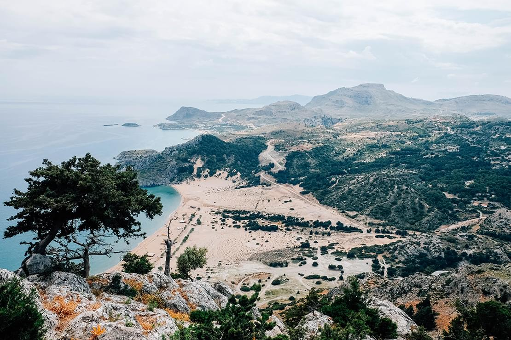
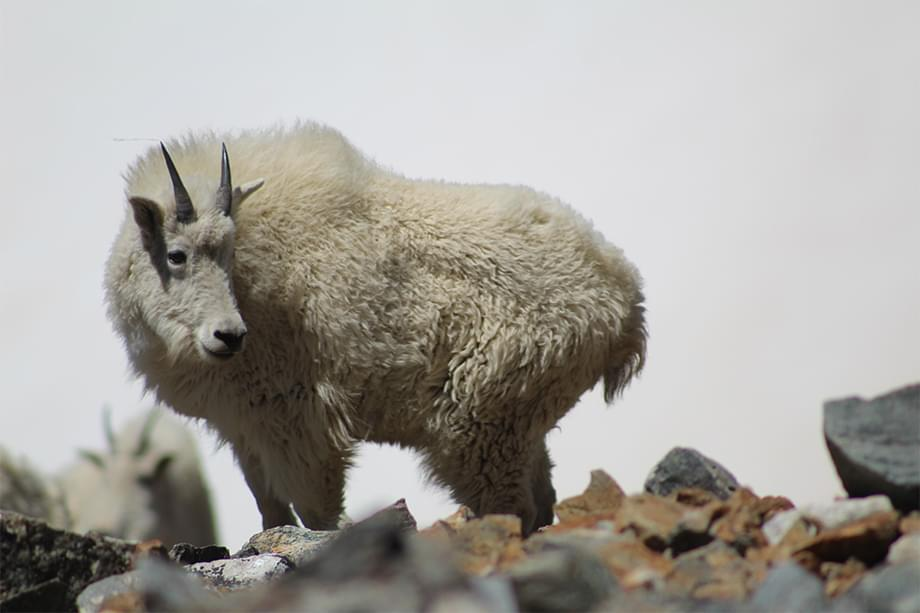
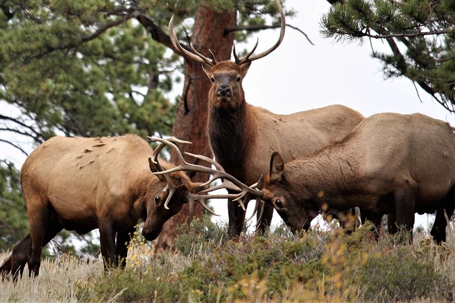
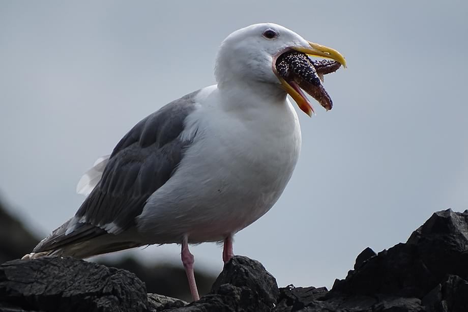
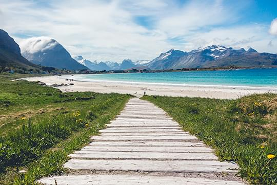

В заповеднике находятся восемь эко-троп для пешей прогулки а также велосипедный маршрут, соединяющий кристально чистое озеро Чистик с подножьем горного хребта.
В заповеднике находятся кристально чистое озеро Чистик и знаменитый пляж Золотой песок Из-за того, что дно озера также покрыто песком, вода постоянно фильтруется и остается кристально чистой круглый год.
Наш заповедник - это уникальная эко-стстема, сотних растений и диких животных. Вы сможете вести наблюдение за ними в их естественной среде обитания.
О нашем заповеднике
Горы | Природа | Пляж
В заповеднике находятся кристально чистое озеро Чистик и знаменитый пляж Золотой песок. Из-за того, что дно озера также покрыто песком, вода постоянно фильтруется и остается кристально чистой круглый год. В заповеднике находятся кристально чистое озеро Чистик и знаменитый пляж Золотой песок. Из-за того, что дно озера также покрыто песком, вода постоянно фильтруется и остается кристально чистой круглый год. В заповеднике находятся кристально чистое озеро Чистик и знаменитый пляж Золотой песок. Из-за того, что дно озера также покрыто песком, вода постоянно фильтруется и остается кристально чистой круглый год. В заповеднике находятся кристально чистое озеро Чистик и знаменитый пляж Золотой песок. Из-за того, что дно озера также покрыто песком, вода постоянно фильтруется и остается кристально чистой круглый год. В заповеднике находятся кристально чистое озеро Чистик и знаменитый пляж Золотой песок. Из-за того, что дно озера также покрыто песком, вода постоянно фильтруется и остается кристально чистой круглый год. В заповеднике находятся кристально чистое озеро Чистик и знаменитый пляж Золотой песок. Из-за того, что дно озера также покрыто песком, вода постоянно фильтруется и остается кристально чистой круглый год.В заповеднике находятся кристально чистое озеро Чистик и знаменитый пляж Золотой песок. Из-за того, что дно озера также покрыто песком, вода постоянно фильтруется и остается кристально чистой круглый год. В заповеднике находятся кристально чистое озеро Чистик и знаменитый пляж Золотой песок. Из-за того, что дно озера также покрыто песком, вода постоянно фильтруется и остается кристально чистой круглый год. В заповеднике находятся кристально чистое озеро Чистик и знаменитый пляж Золотой песок. Из-за того, что дно озера также покрыто песком, вода постоянно фильтруется и остается кристально чистой круглый год. В заповеднике находятся кристально чистое озеро Чистик и знаменитый пляж Золотой песок. Из-за того, что дно озера также покрыто песком, вода постоянно фильтруется и остается кристально чистой круглый год.В заповеднике находятся кристально чистое озеро Чистик и знаменитый пляж Золотой песок. Из-за того, что дно озера также покрыто песком, вода постоянно фильтруется и остается кристально чистой круглый год.
В заповеднике находятся кристально чистое озеро Чистик и знаменитый пляж Золотой песок. Из-за того, что дно озера также покрыто песком, вода постоянно фильтруется и остается кристально чистой круглый год. В заповеднике находятся кристально чистое озеро Чистик и знаменитый пляж Золотой песок.
2002
Официальное открытие
В заповеднике находятся кристально чистое озеро Чистик и знаменитый пляж Золотой песок. Из-за того, что дно озера также покрыто песком, вода постоянно фильтруется и остается кристально чистой круглый год. В заповеднике находятся кристально чистое озеро Чистик и знаменитый пляж Золотой песок.
2020
Главный приз Эко-фестиваля
В заповеднике находятся кристально чистое озеро Чистик и знаменитый пляж Золотой песок. Из-за того, что дно озера также покрыто песком, вода постоянно фильтруется и остается кристально чистой круглый год. В заповеднике находятся кристально чистое озеро Чистик и знаменитый пляж Золотой песок.
Животные нашего заповедника

Горные бараны
В заповеднике находятся кристально чистое озеро Чистик и знаменитый пляж Золотой песок. Из-за того, что дно озера также покрыто песком, вода постоянно фильтруется и остается кристально чистой круглый год.

Горные олени
В заповеднике находятся кристально чистое озеро Чистик и знаменитый пляж Золотой песок. Из-за того, что дно озера также покрыто песком, вода постоянно фильтруется и остается кристально чистой круглый год.

Горные бакланы
В заповеднике находятся кристально чистое озеро Чистик и знаменитый пляж Золотой песок. Из-за того, что дно озера также покрыто песком, вода постоянно фильтруется и остается кристально чистой круглый год.
В заповеднике находятся кристально чистое озеро Чистик и знаменитый пляж Золотой песок. Из-за того, что дно озера также покрыто песком, вода постоянно фильтруется и остается кристально чистой круглый год. В заповеднике находятся кристально чистое озеро Чистик и знаменитый пляж Золотой песок. Из-за того, что дно озера также покрыто песком, вода постоянно фильтруется и остается кристально чистой круглый год. В заповеднике находятся кристально чистое озеро Чистик и знаменитый пляж Золотой песок. Из-за того, что дно озера также покрыто песком, вода постоянно фильтруется и остается кристально чистой круглый год. В заповеднике находятся кристально чистое озеро Чистик и знаменитый пляж Золотой песок. Из-за того, что дно озера также покрыто песком, вода постоянно фильтруется и остается кристально чистой круглый год.
Напишите нам

Нажимая отправить, Вы соглашаетесь с обработкой и хранением ваших персональных данных.